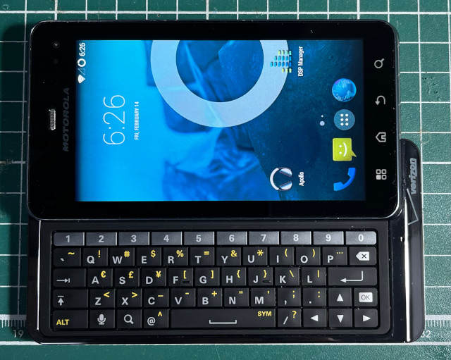

參考資訊：
https://github.com/leewp14/android_kernel_motorola_omap4-common
https://github.com/Lost-Entrepreneur439/OMAP4430-releases/releases/tag/2025-02-08
https://xdaforums.com/t/rom-unofficial-4-4-4-lineageos-11-for-motorola-droid-3-milestone-3.4717707/
步驟如下：
1. Root官方系統
2. 安裝https://github.com/steward-fu/website/releases/download/xt862/Droid3Safestrap-3.05.apk
3. 進入Safestrap
4. 新增Slot-1分區
5. 刷入https://github.com/Lost-Entrepreneur439/OMAP4430-releases/releases/download/2025-02-08/lineage-11-20250208-UNOFFICIAL-solana.zip
完成
